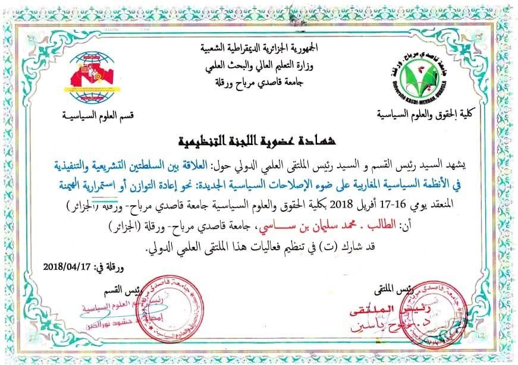
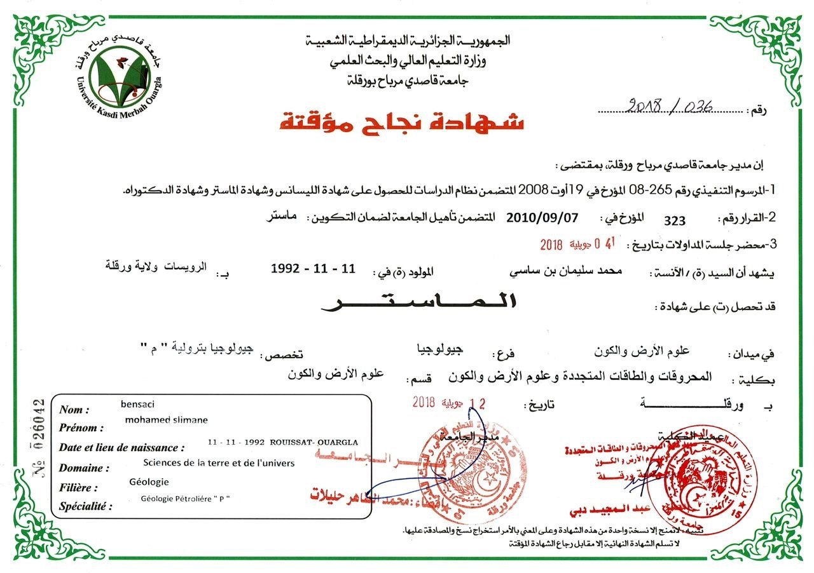
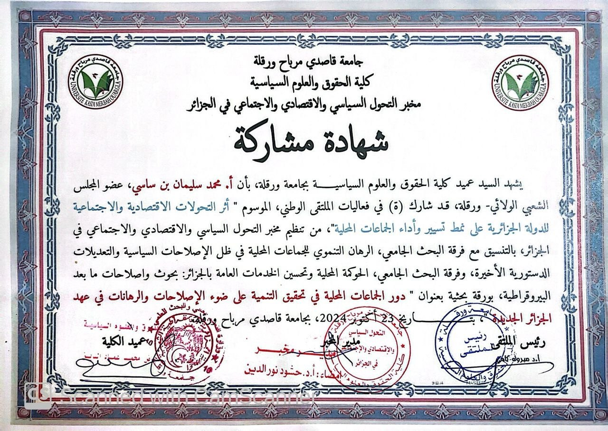

أصالة، عصرنة و تشبيب لجزائر منتصرة
برنامج واقعي يضع المواطن في صلب الأولويات، ويهدف إلى
تحقيق تنمية عادلة، اقتصاد قوي، وخدمات عمومية ذات جودة.
ينطلق برنامجنا من مبادئ راسخة وأهداف واضحة، مستندًا إلى مسيرة علمية وميدانية حافلة بالعطاء، خدمةً للمواطن والولاية والوطن.
الإصغاء الميداني لانشغالات المواطنين، وتحسين قدرتهم الشرائية، ودعم الفئات الهشة وذوي الدخل المحدود.
الحزب كداعم أساسي لبرنامج رئيس الجمهورية وتجسيد شعار "الجزائر المنتصرة" مع تقديم وجوه وكفاءات جديدة.
تعزيز الجبهة الداخلية لمواجهة التحديات الإقليمية، وصون الهوية الوطنية والمبادئ الوطنية الراسخة.
توطيد العلاقات مع الأحزاب الصديقة والحركات التحررية، والتأكيد على المواقف الثابتة من القضية الفلسطينية والصحراء الغربية.
ثلاثة عشر محوراً شاملاً يضع المواطن في صلب الأولويات، ويهدف إلى تحقيق تنمية عادلة واقتصاد قوي وخدمات عمومية ذات جودة.
التربية
التعليم العالي والبحث العلمي
مسيرة أكاديمية متميزة تمتد لعقود، تُجسّد الكفاءة العلمية والانتماء لمؤسسات التعليم العالي الوطنية والدولية.

شهادة عضو اللجنة التنظيمية للملتقى العلمي الدولي حول: "العلاقة بين السلطتين التشريعية والتنفيذية في الأنظمة السياسية المغاربية على ضوء الإصلاحات السياسية الجديدة: نحو إعادة التوازن أو استمرارية الهيمنة" — جامعة ورقلة — 2018

شهادة ماستر في الجيولوجيا البترولية المهنية — جامعة قاصدي مرباح، ورقلة — 2018

شهادة مشاركة في الملتقى الوطني الموسوم بـ: "أثر التحولات الاقتصادية والاجتماعية للدولة الجزائرية على نمط تسيير وأداء الجماعات المحلية" — كلية الحقوق والعلوم السياسية، جامعة قاصدي مرباح، ورقلة — 2024
تعهداتنا للمواطن: العمل الميداني المستمر وخدمته بصدق، نقل انشغالاته بكل أمانة ومسؤولية، والدفاع عن مصالحه داخل المؤسسات مع تعزيز القرب الدائم منه.